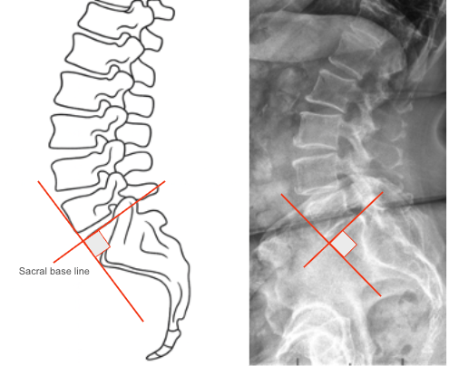

1) Description of Measurement
Ullmann’s Line is a radiographic parameter used to evaluate anterior vertebral translation (spondylolisthesis) at the lumbosacral junction (L5–S1).
It serves as a simple geometric reference for detecting anterior slippage of L5 relative to the sacrum by assessing the alignment between the L5 vertebral body and the sacral base.
The line provides a quick, qualitative and quantitative tool to detect low-grade spondylolisthesis and assess lumbosacral shear stability.
2) Instructions to Measure
3) Normal vs. Pathologic Ranges
Key Point:
Any anterior crossing of Ullmann’s Line signifies abnormal vertebral translation—a hallmark of isthmic or degenerative spondylolisthesis.
4) Important References
Ullmann JB. The etiology and treatment of spondylolisthesis. J Bone Joint Surg. 1933;15(3):586–599.
Boxall D, Bradford DS, Winter RB, Moe JH. Management of severe spondylolisthesis in children and adolescents. J Bone Joint Surg Am. 1979;61(4):479–495.
Hresko MT, Labelle H, Roussouly P, Berthonnaud E. Classification of high-grade spondylolisthesis based on pelvic balance: the importance of sagittal alignment. Spine. 2007;32(20):2208–2213.
White AA, Panjabi MM. Clinical Biomechanics of the Spine. 2nd ed. Lippincott Williams & Wilkins; 1990.
Dubousset J, Shufflebarger H, Herring JA. Spondylolisthesis in children and adolescents. Spine. 1999;24(24):2640–2648.
5) Other info....
Ullmann’s Line is one of the earliest and most widely used radiographic methods for detecting spondylolisthesis and assessing lumbosacral stability.
It provides a static geometric check that complements quantitative slip grading (e.g., Meyerding Classification).
Especially useful in low-grade slips, where subtle anterior translation may not be visually obvious.
Best performed on standing radiographs to reflect weightbearing mechanics; supine films may underestimate translation.
Often used in combination with:
In severe slips, the L5 vertebral body may project significantly anterior to the perpendicular line, indicating advanced spondylolisthesis and potential need for surgical stabilization.
Clinical correlation: A positive Ullmann’s Line (L5 crossing anteriorly) typically coincides with pain, mechanical instability, or neurological symptoms in the lumbosacral region.